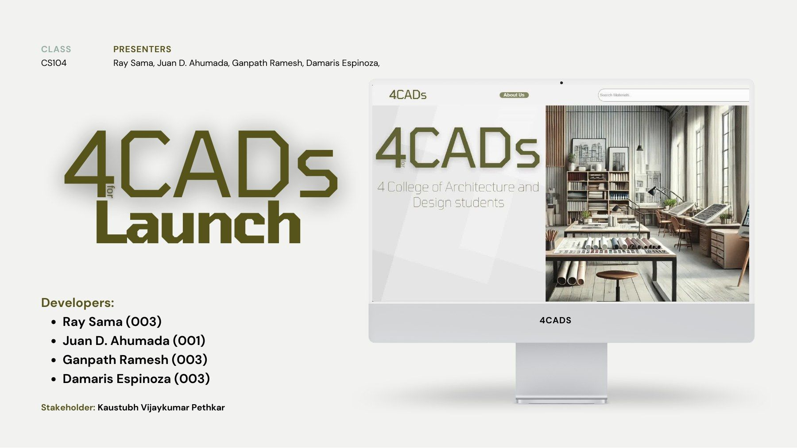
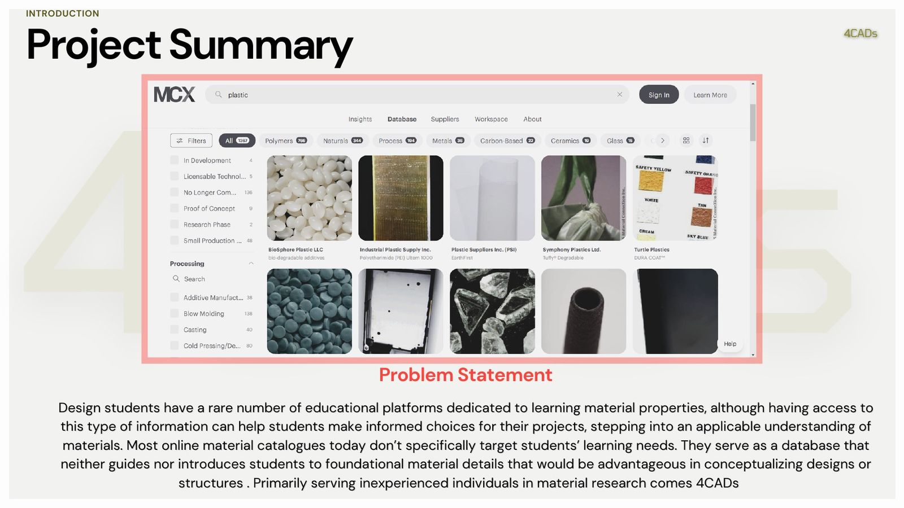
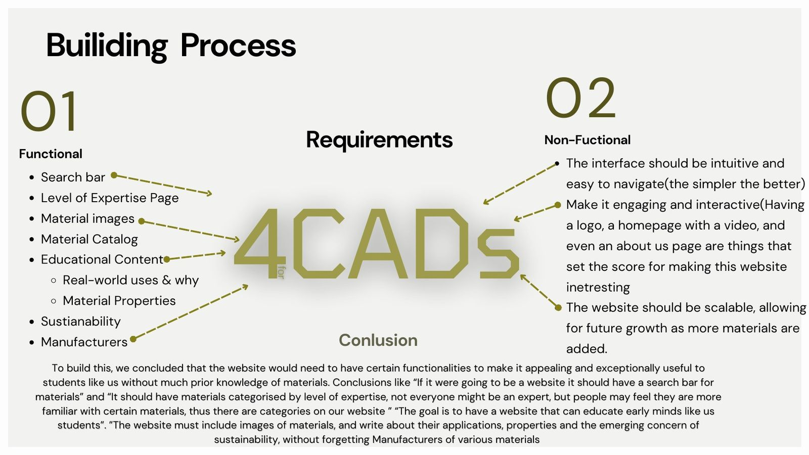
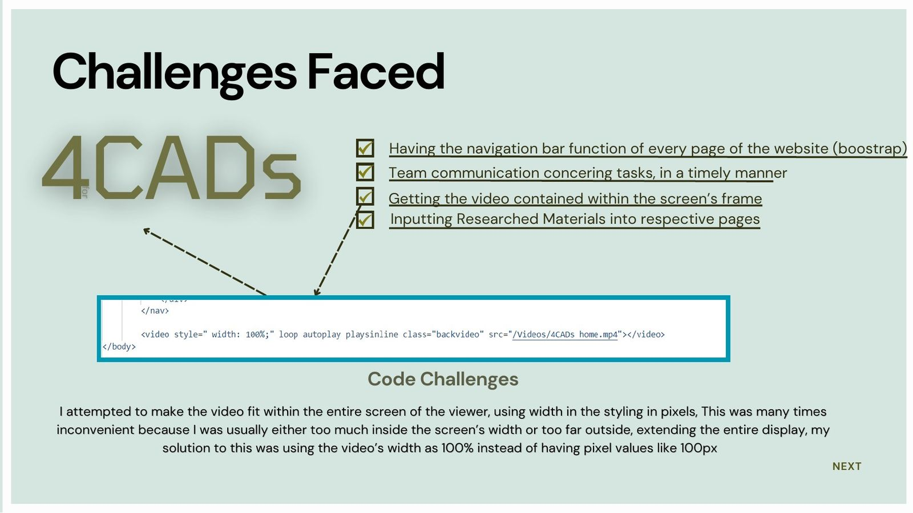
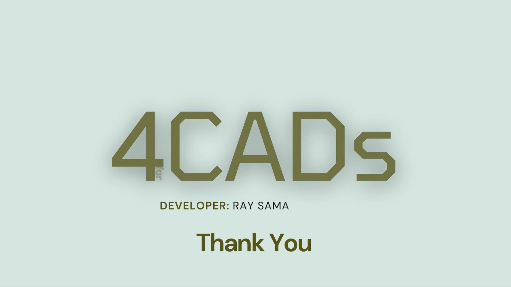

Ed tech · Web · Team lead
4CADs
A learning site that introduces design students to materials by level of expertise

The problem
Design students have few educational resources for learning about materials. Most online catalogs work as databases. They don’t guide beginners or explain the material basics that help when you’re conceptualizing a design.
My role
As project lead, I designed the high-fidelity mockups for every page and built the homepage (logo and landing video), the interactive navigation bar, the search bar and the About page. Teammates built the level-selection page, the category pages and the material content.
Process
Write requirements from the learner’s side
The team agreed that the site needed a search bar, materials organized by level of expertise, real images, and content on applications, properties, sustainability and manufacturers. It also had to be simple, engaging and scalable as more materials are added.

Problem statement 
Functional and non-functional requirements Lead the build
I refined a teammate’s first low-fidelity mockup into high-fidelity designs, then built the homepage and navigation. One stubborn bug: the landing video kept overflowing the screen until I switched from fixed pixel widths to 100%.

My tasks 
Challenges and fixes
Outcome
The team launched a working site that lets students choose a knowledge level and browse materials with images, properties, real-world uses and sustainability notes.